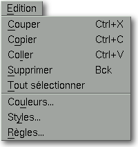

<!-- Documentation Xclamation (c)1994-2000 AXENE contact axene@axene.org>
<html>
<head>
<title>Menu Edition</title>
</head>

<body BGCOLOR="#FFFFFF" BACKGROUND="Images/back.gif" TEXT="#000000">
<p ALIGN="right">


<p>
<br>
<br>
Le menu déroulant Edition permet d'interagir avec le presse-papiers
et d'éditer les différentes listes d'entités.
<br>
<br>
<hr>
<br>
<center>

<br>
<i><small>
Photo d'écran&nbsp;: Menu déroulant Edition
</i></small>
</center><p>
<br>
<hr>
<br>
<p>
<h3>Le menu Edition comporte les entrées suivantes&nbsp;:</h3>
<ul>
  <li><a NAME="cut_menu_entry">
     l'entrée <i>&quot;Couper&quot;</i>
     permet de <b>copier les cadres sélectionnés dans le 
     presse-papiers et de les supprimer du document</b>.
     La sélection de cadres coupés remplace le contenu
     du presse-papiers et peut être restituée sur un
     autre document ou sur une autre page du même document grâce
     à l'entrée <i>&quot;Coller&quot;</i>. Cette entrée
     est grisée si aucun cadre n'est sélectionné
     dans le document actif.
     </a><p>
  <li><a NAME="copy_menu_entry">
     l'entrée <i>&quot;Copier&quot;</i>
     permet de <b>copier les cadres sélectionnés 
     dans le presse-papiers</b> sans les supprimer du document. La
     sélection de cadres copiés remplace le contenu
     du presse-papiers et peut être restituée sur un
     autre document ou sur une autre page du même document grâce
     à l'entrée <i>&quot;Coller&quot;</i>. Cette entrée
     est grisée si aucun cadre n'est sélectionné
     dans le document actif.
     </a><p>
  <li><a NAME="paste_menu_entry">
     l'entrée <i>&quot;Coller&quot;</i>
     permet de <b>copier les cadres contenus dans le presse-papiers sur
     le document actif</b>. Cette entrée est grisée si le
     presse-papiers est vide, c'est-à-dire si aucune opération
     &quot;couper&quot; ni &quot;copier&quot; n'a été
     effectuée.
     </a><p>
  <li><a NAME="delete_menu_entry">
     l'entrée <i>&quot;Supprimer&quot;</i>
     permet de <b>détruire le ou les cadres sélectionnés</b>.
     Cette suppression agit sur deux niveaux&nbsp;: si un cadre est rempli
     par une image, un texte ou un dessin vectoriel, l'action &quot;supprimer&quot;
     vide le cadre sans le détruire ; si un cadre est vide,
     &quot;supprimer&quot; le détruit. Toute suppression
     est irrémédiable.
     </a><p>
  <li><a NAME="select_all_menu_entry">
     l'entrée <i>&quot;Tout sélectionner&quot;</i> 
     permet de <b>sélectionner tous
     les cadres présents sur le plan d'affichage</b> du document
     actif. Si, par maladresse, un cadre est placé entièrement
     en dehors du plan d'affichage, cette option est la seule qui permette
     d'y accéder.
     </a><p>
  <li><a NAME="color_menu_entry">
     l'entrée <i>&quot;Couleurs...&quot;</i>
     permet d'<b>éditer la liste des couleurs</b>. Elle appelle la boîte de
     dialogue '<a HREF="Box_Color.html">Préparation des couleurs</a>'.
     </a><p>
  <li><a NAME="font_menu_entry">
     l'entrée <i>&quot;Styles...&quot;</i>
     permet d'<b>éditer la liste des styles</b> de texte. Elle appelle
     la boîte de dialogue '<a HREF="Box_Font.html">Composition des styles</a>'.
     </a><p>
  <li><a NAME="paragraph_menu_entry">
     l'entrée <i>&quot;Règles...&quot;</i>
     permet d'<b>éditer la liste des règles</b> de texte. Elle
     appelle la boîte de dialogue 
     '<a HREF="Box_Paragraph.html">Composition des règles</a>'.
     </a><p>
</ul>
<br>
<hr>
<p ALIGN="right">
<p>
</body>
</html>


